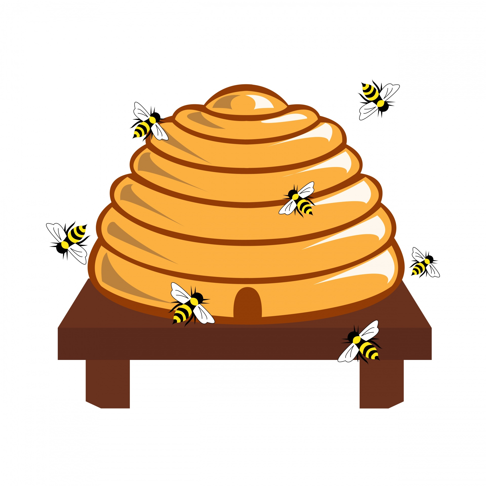
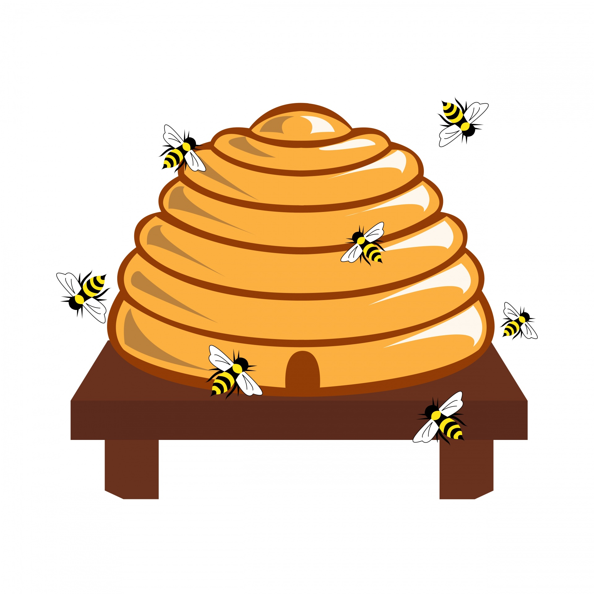
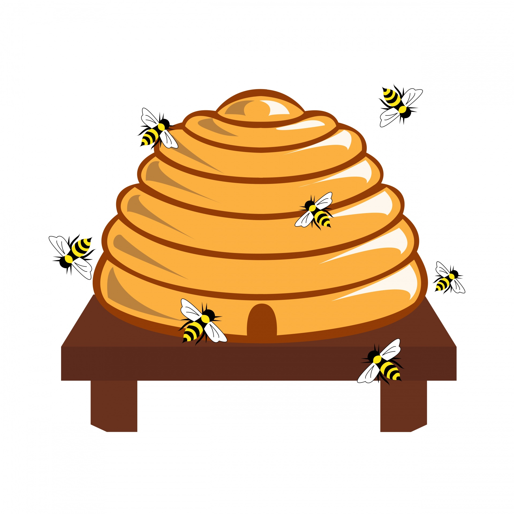

Välkommen till Allerumshonung
Försäljning av
2023 års skörd
Rapshonung/sensommarhonung
500g burk: 75 kr/st
700g burk: 95 kr/st
Låda med 12 burkar à 700 g: 1100 kr

Bildgalleri
Intressanta länkar
Biodlarna
Jordbruksverket
Kurser på SLU
Allt om Biodling
Tidningen Land - Biodling

 
